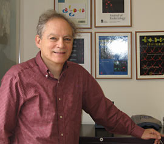
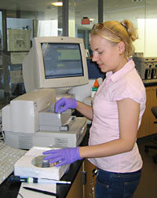

News Archives : 2004 : Teaching Tomorrow's Biology Today
by Patricia Thomas
June 16, 2004
Bio Sci 50 and MCB 100 are not your father's biology courses. They are not even your big sister's, and she graduated just a few years ago.
Instead, these classes have been created or radically redesigned by Harvard's Molecular and Cellular Biology (MCB) faculty since 2000. In late 1999, as the new millennium drew near, these biologists could see that their world was changing at an unprecedented rate – largely because biology is converging with physics, mathematics, and information technology.
Powerful computers make it possible to monitor the activity of as many as 30,000 human genes at once, and automated sequencing machines can decode an entire gene in one day. Microarrays enable chemical biologists to evaluate the medical potential of thousands of chemicals simultaneously, and new imaging techniques let neuroscientists eavesdrop on the clandestine chatter of brain cells.
But the professors had a problem. Innovations in the laboratory were not being effectively translated into the classroom. Especially in introductory courses, faculty were trying to cope with the overwhelming torrent of new discoveries by "packing more and more details and information into the same period of time," says Robert A. Lue, MCB's executive director of undergraduate education. MCB's freshman biology course, for example, was bursting at the seams with introductions to genetics, along with molecular, cellular, and developmental biology. As professors struggled to cram all the latest and greatest findings into a single overcrowded semester, there wasn't time to look at anything in depth, Lue says.
The faculty resolved to set aside their old syllabi and start over. They wanted to transform biology education so that students would develop a conceptual understanding of the life sciences, appreciate what's known today, and gain the analytical skills needed to tackle tomorrow's questions. Not only that, the faculty wanted to appeal to a cross-section of Harvard undergraduates.
"We feel very strongly that whether you become a research scientist, a physician, or a lawyer, biology is going to be an increasingly important part of critical decisions you make about your health, and decisions you need to vote on as an American," says Lue. "Every citizen should have at least some grasp of the life sciences."
STUDENT PROFILES
|
|||||||||
When MCB and Organismal and Evolutionary Biology (OEB) faculty set out to build a new, interdisciplinary introduction to biology, they had two main goals. They wanted to ensure that "even if students never take another bio course, they will understand the problem-solving orientation of biology that is so beautifully represented in genetics," says Lue. Their second aim was to use genomics "to give students a new way of organizational thinking about biology."
The course they designed, "Genetics and Genomics," has been nothing short of a revelation for some Harvard freshmen. "Biology in high school and biology in BS 50 were almost like two completely different subjects," says Vivek Ramaswamy, who arrived at Harvard last fall from Cincinnati. High school biology was all about memorization; in BS 50 he learned problem-solving skills that will serve him long beyond his undergraduate years. Vivek is as interested in law as in biology, and after law school he hopes to specialize in the ethical implications of new life science technologies.
In addition to lectures and laboratory experiences, a major feature of BS 50 is the semester-long Human Genetic Disease Research Project (HGDRP). Each student is assigned to study a specific genetic disease, and their inquiries are guided by questions handed out at intervals. To find answers, students comb the scientific literature and use sophisticated online resources, including sequence databanks, to investigate everything from the disease's clinical presentation to its molecular biology. They share their findings with other students in a series of written reports and oral presentations that add up to a major research paper.
Although Vivek had no previous experience reading hard-core scientific journals, BS 50 left him confident that he can open a copy of Nature or Cell and grasp the gist of the articles. The course required him keep up with the literature on Beckwith-Wiedemann syndrome, the rare disorder he was studying, and to pursue articles about related genetic phenomena and the technologies used to understand heritable diseases. More important than the facts he learned, however, are the analytical skills he acquired. "What you don't know, you can look up," Vivek says. "But what you can't do, you can't do."
For Casey Cormier, BS 50's initial focus on genomics illuminated everything that happened later in the semester. "It was like having the whole big picture in front of you, seeing the scenery, and then zooming in and seeing how the pixels are put together." She was a freshman when she took the course, and its human disease component was her first taste of independent research. Digging into the genetics, molecular biology, and biochemistry of Lesch-Nyhan syndrome showed her how scientists apply concepts that were described in lectures and lab sessions.
In fact, Casey's experiences in BS 50 motivated her to compete for one of the highly sought places in the first-ever offering of MCB 100: Experimental Molecular & Cellular Biology.
MCB 100: Life Lessons in the Laboratory
One of the richest experiences offered by a great research university is the opportunity for students to participate in faculty research. "But faculty cannot take undergraduates into their labs unless they can find a space for them, and unless they can find someone to do the basic training and mentoring," says Robert Lue. As a consequence, it's rare to find more than one or two undergraduates in a faculty lab.
MCB 100 is a novel solution to this problem. This term, the course offers 18 students the opportunity to work closely with one of three faculty members. Teams of six students conduct experiments for these professors in a suite of rooms in the Biological Laboratories, outfitted with $300,000 worth of high-tech equipment purchased with grants from the Howard Hughes Medical Institute. Next year, when MCB 100 moves into a larger space in the same building, enrollment will be increased and another faculty project added.
The students tackle experimental questions posed by Richard Losick, head tutor for biochemical sciences, MCB Professor Craig Hunter, and Angela Koehler, research fellow in chemical biology at the Broad Institute. The course is directed by Alain Viel, a biochemist and developmental biologist, and MCB's associate director of undergraduate research. Post-doctoral fellows from the Losick and Hunter labs are also on hand to provide training, supervision, and sympathy when things go awry.
Students are required to spend six hours in the lab every week, but most are there for twice as long. One reason, says Viel, is that "they have to repeat the experiment until it works." These experiments are for real, and the faculty members need the students' results.
|  Prof. Richard Losick, Harvard College Professor, Maria Moors Cabot Professor of Biology, and Head Tutor, Biochemical Sciences Concentration |
|
She also thinks the course has sharpened her ability to think strategically. MCB 100 requires students to review earlier experiments, consider what others in the field are doing, and figure out for themselves "how to plot a way from here to there." As soon as Jung graduates she will be joining a business-consulting firm in Washington, where she will "look at a company's history, its competitors, and where the industry is moving, then try to figure out how to make it more profitable." What she learns in the biology lab will transfer nicely to the boardroom.
Because MCB 100 allows students to work autonomously, it can accommodate a wide range of expertise and interests. Sophomore Jillian Spangler, for example, has been working for 30 hours each week in a Harvard Medical School (HMS) lab since her freshman year and plans to earn a PhD in biochemistry or chemical biology. She will probably stay with her present lab at HMS through graduation, and signed up for MCB 100 because "here I can get exposed to multiple projects and techniques."
Jillian is one of six students using small-molecule microarrays to search for chemicals that inhibit genetic transcription and may point toward new treatments for certain cancers. The MCB 100 students are using techniques devised by Angela Koehler of the Broad Institute, who packs as many as 10,800 different chemicals on a single glass slide. While the other students follow Koehler's original plan of work, Jillian has gone off on her own. This is fine with course director Viel, who says that freeing students to work at their own pace lets those with advanced skills "branch out because they need less guidance on the nitty-gritty."
At a recent MCB 100 lab meeting, it was apparent that tomorrow's basic scientists aren't the only ones who come up with surprising and significant results. Steve Lee, a sophomore concentrating in the history of science, is one of six students helping the Losick lab search for mutations that prevent Bacillus subtilis from forming biofilms, which the bacterium requires during one stage of its life cycle. Steve described finding a biofilm-disrupting mutation that teaching fellow Daniel Kearns says is "unknown to the vast majority of people working in B. subtilis." The genetic oddity Steve identified is already useful for doing new experiments, and in the long run it may prove to be an important regulator of biofilm formation.
|  Undergraduate Jillian Spangler |
|
Unfinished Symphony
By creating BS 50 and MCB 100 and revising the other introductory courses for biology and biochemical sciences concentrators, members of the MCB faculty have brought about a quiet revolution in life sciences education.
But curriculum revision isn't finished now–and never will–partly because new faculty come on board and new interdisciplinary connections surface, says Lue. Faculty members are retooling advanced courses in the biology and biochemistry sequences and planning entirely new courses on neuroscience, mathematics and biology, and genomics and systems biology.
Unlike calculus or introductory organic chemistry, where the basic facts and concepts aren't likely to change, new answers to fundamental biology questions can crop up at any time. For example, in the cell biology course that he teaches with Professor Ray Erikson, Lue discusses the mechanisms that macromolecules use to penetrate the nucleus. "I've been teaching this for four years now, and every year it's different," he says.
None of Lue's other lectures stay the same, either. For every one, "I have to ask myself, 'Is that model correct? Is that the model I want to teach now?'" Although this is more demanding than stepping up to the lectern and unspooling a well-worn set piece, Lue says that he and other faculty members don't mind a bit. They're glad that, in biology, discovery never sleeps.
| MCB Anticipated FAS, National Reforms
By Patricia Thomas Harvard is not the only institution that was struck by the need to revitalize biology education. One year after MCB faculty members began rethinking their curriculum, a national committee embarked on a similar mission. This group was formed by the National Research Council (NRC) of the National Academies, at the urging of the National Institutes of Health and the Howard Hughes Medical Institute, and asked to focus on preparing students for twenty-first-century careers in scientific research. Meanwhile, MCB faculty considered what all students–not just aspiring scientists–needed to know about biology. Professor Richard Losick's introduction to molecular biology, Bio Sci 52, was the first redesigned course out of the gate, making its debut in the fall of 2000. It was soon followed by Bio Sci 50: Genetics and Genomics, in the spring term. This interdisciplinary introduction to modern biology, designed and taught by faculty from MCB and Organismal and Evolutionary Biology (OEB), now enrolls about 400 to 450 students each year. New versions of the remaining introductory courses for biology and biochemistry concentrators have subsequently been launched, and the latest addition to the catalog is MCB 100, a novel hands-on approach to experimental biology. All told, about 1,000 Harvard undergraduates benefit from these new and updated courses each year. MCB's self-examination anticipated a curriculum review that the Faculty of Arts and Sciences (FAS) began in October 2002. This in-depth examination of undergraduate education at Harvard tackles big questions such as what it means to be an educated person in the early twenty-first century, what the enduring goals of a liberal education are, and how these can be met in a modern research university. The report from the FAS review was released in April 2004 with one of the principal recommendations being that we " . . . enhance significantly the opportunities for our students in international studies and the sciences, two areas in which the world has changed most dramatically since our last review of the undergraduate curriculum." In late 2003, when the NRC committee released its recommendations for improving biology education, MCB had already accomplished many of them. "Teaching and learning must be made more active to engage undergraduates, fully prepare them for graduate study, and give them an enduring sense of the power and beauty of creative inquiry," the committee wrote. By all accounts, Harvard courses such as BS 50 and MCB 100 are succeeding brilliantly on this front. |